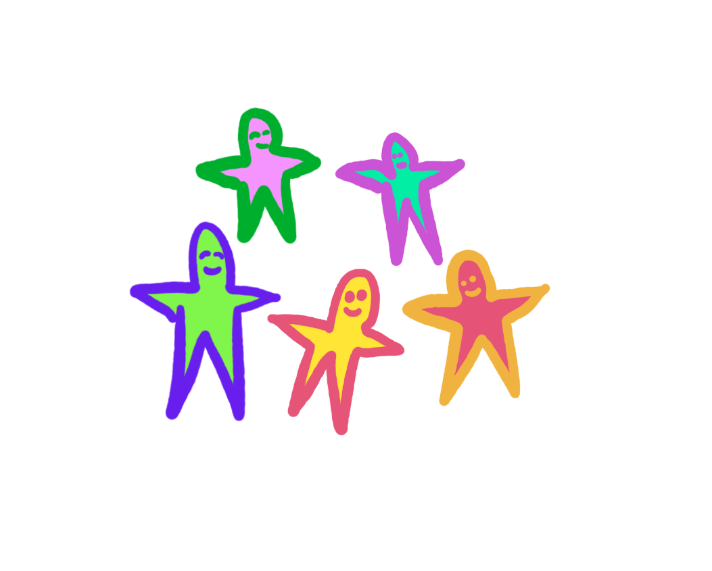

Experimental Gatherings
Inspiration Show & Tell
Recently I hosted a tiny experimental gathering.
A small group of us gathered together to intentionally share sources of creative inspiration with each other.
Pandemic:
The gathering was right before we all started self-isolating because of the pandemic. Hopefully a lot of the lessons carry easily over to online gatherings.

How this gathering is different:
The gathering was unique because it was:
- Unusually short - 1 hour instead of an evening
- Unusually small - 8 people instead of many
- At my home instead of in an office
- With soup & tea instead of candy & beer
- Everyone co-sharing inspirations instead of a few artists showing their own creative output
Most of the formal creative gatherings that I've attended in Berlin, San Francisco, Toronto, New York, and Montreal are large gatherings that occupy most of an evening. They happen in tech offices, sometimes involve security guards, might have free beer or candy, and often feature specific artists talking about their own work to an audience of other artists. These events can be wonderful, but I'm curious about other possiblities.
Questions:
I’m curious about experimenting with the fabric of creative gatherings to see what else is possible:
- How does experimenting with format change how we relate to each other?
- How do we connect in tiny gatherings?
- Does sharing inspiration sources feel fundamentally different than sharing our own work?
Invitation template:
Below is the template I wrote and didn't use. I was self-conscious about the formality and the idea of copy-pasting text. You can read later in this post about how this was a mistake.
- What: A tiny one-hour gathering experiment
- Why: To share creative inspirations together
- How: Gather together and share art over soup and tea
- What to bring: A work of art that inspires you creatively
- Wondering if something counts as art? The answer is definitely yes. Intervention art, machine art, play art, strange tools, weird DIY projects very welcome. The art can be made by anyone, as long as it isn't you.

How did it go?
Well I always deal with ragged and unspooling feelings when organizing any kind of gathering. I loop myself around in a taunting voice while yanking on the tendons that hold me together while shredding my foundational sense of self-worth. Then I ruminate for a week or year, waking through the night in horror at something I said or didn't say, did or didn't do. It’s hard to be objective.

Okay but how did it go?
Overall, it was wonderful - a handful of incredible people gathered together for an hour and shared creative inspirations.
The inspirations were diverse - a unique physical book, using plants to store data, a cat bot, someone smashing their head into a screen, a person playing a tree branch, a voice AR creature, a blueberry computer, and chocolate box electronic music.
I carefully invited people from different communities so most people knew or knew of some of the others, but no one knew everyone. Everyone met someone new.
Timeline:
- 5 years ago - consider doing this.
- 2 years ago - agonize the details.
- 1 year ago - consider and reconsider how it should work.
- 6 months ago - remember that I sometimes need to do in order to know.
- In the last week - invite people (no turning back).
Gathering Day!
- 10:00 - Start simmering soup broth.
- 4:30 - Grocery-shop for a missing ingredient.
- 5:05 - Consider handwashing. Time to make a sign?
- 5:08 - Get music playing.
- 5:09 - Have a billion new ideas about experimental gatherings.
- 5:10 - Try to stop thinking! Need to make soup!
- 5:11 - Start oven-roasted mushrooms & noodles for soup.
- 5:30 - Try to time the soup & tea to be ready but not cold at 6.
- 5:45 - Someone arrives.
- 5:46 - I distractedly welcome them while pots boil over.
- 5:50 - Balance greetings & cooking with mixed success.
- 6:00 - More arrivals, people help by greeting each other.
- 6:03 - I excitedly share the intention of the gathering.
- 6:08 - People chat over tea while I set up the soup station.
- 6:10 - I'm delighted & frantic. People get soup.
- 6:11 - Should we start? Or wait for the last person?
- 6:14 - Check messages, check breathing.
- 6:15 - Is the last person locked outside?
- 6:17 - We sit down to start.
- 6:18 - I share the intention again for the new arrivals.
- 6:20 - A person arrives, we pause to loop them into the moment.
- 6:23 - I share the intention a third time, awkwardly?
- 6:25 - Introductions - how to make this fun? Is this working?
- 6:30 - Begin sharing.
- 6:31 - I go first to try to set the tone/make it not scary for others.
- 6:35 - Everyone takes a turn sharing.
- 6:36 - Deciding on order is hard and the hdmi cable is short.
- 6:40 - We feel out what we are doing as we go. People are co-supportive.
- 6:45 - A timer would be nice. Stress mounting as time shrinks.
- 6:58 - Frantically making time for the last person.
- 7:00 - I let people know the event is over.
- 7:01 - I want to honour the rule but we all want to talk more!
- 7:02 - We discuss what worked/what we would change in future.
- 7:04 - Horror: the last person to arrive didn’t get to share!
- 7:05 - They share.
- 7:10 - The event ends again, people help clean up.
- 7:15 - People leave slowly, we want to talk more!
- 7:30 - I run around my home wildly shakkingg out the feelings.
What worked
It’s funny how making a list of things “that worked” helps me notice all the things that worked.
- Venue - I live in a large apartment on a metro line so it’s easy to host (hooray Montreal).
- Movement - People weren't trapped in self-isolation because of a pandemic yet.
- Visuals - I have a projector, thankfully it wasn’t too light at 6pm.
- Food/drink - Soup and tea were nourishing.
- Amount of people - 8 people was good. We could do a few more/less if we are mindful of time
- Short meeting time - There was near-unanimous excitement about restricting it to an hour. Even though we all wanted more time. It was short enough that people could even use their metro transfer to go home.
- Greetings - Taking a moment to greet each person and actually open to them is so important. When I was able to do this, it was wonderful.
- Handwashing - Everyone washed their hands on arrival. Asking people to wash their hands immediately after welcoming them felt strange! But this was important.
- Setting the intention - Communicating why we were gathering and what we hoped to do together was critical to the event doing what I wanted it to do.
- Safety/Disclosure - At the beginning I communicated that I wanted the gathering to be good for people and that I would want to change things to make the experience work for people. I asked people to let me know if they had any needs, preferences, or if something wasn't working. I also disclosed a personal example of something that is challenging for me at gatherings and how I navigate it.
- Guests - The group of people that came were curious, kind, and supportive of each other and the experiment. People said encouraging things to each other after each one shared.
- Host going first - Going first worked well to set the tone and make people feel safe.
- Sharing inspirations - Sharing creative inspirations in contrast with sharing our own output feels more exploratory, gentle/tentative, and comes out of a wider possibility space. Sharing our own work always feels a tiny bit like self-promotion under late capitalism, even when it involves critical support and/or glowy feelings of community and validation.
- Getting feedback - It was really helpful to get feedback from people both immediately at the end of the event and also a day later.
What didn’t work
- Invitations - I wrote an invitation template then re-wrote each invitation differently for each person (copy/pasting identical messages to friends feels uncomfortable) and I accidentally left out a very important detail on one invitation. This created a bad situation where one person was left out of a mutual understanding. Next time: copy/paste the invitation.
- Event start time - This gathering was unique for being very short (1 hour). And people loved how tiny it was. But it’s not great to feel rushed though arrivals. Next time: add a 15 minute buffer for arrivals.
- Cohesive arrival time - Setting intentions and talking about important safety/comfort stuff needs to be at the beginning. But people arriving after the start time makes it impossible to make sure everyone has the same information. Next time: better communicate the start time.
- Greetings & Food - Welcoming people is one of the most important parts of organizing a gathering and creating a feeling. I was distracted by boiling-over pots and oven-mushrooms. Next time: make easier soup.
- Introductions - Doing a specific introduction round was nice, but also it felt awkward when I asked this tiny group of people to say more than their names (example: “tell us your name and a delicious food/drink you have had recently”). Next time: try doing just names.
- Links - It was difficult to find some of the links on the spot Next time: gather links before the gathering. Saves precious time and also the awkwardness of people trying to use a strange computer.
- Stress - Sometimes I overheat when it comes to social situations. My intense feelings of wanting everyone to be ok and also feeling completely alien (I'm bewildered at how/what makes people feel ok) means that I sometimes say or do the wrong thing completely. Next time: live in a culture where it doesn't cost 150$/hour for bad therapy. Seriously though, it's slow but I'm working on it.
- Sharing inspirations - Many people wanted to share their own work by the end. I don’t really know if this is a “didn’t work” because it goes against the idea of the gathering or a “did work” because it's a clear sign that people felt connected and excited. I want to mention it here though.
- Audio - My laptop speakers did not sound excellent. Next time: better sound, especially for audio-based creative inspirations.
- Sharing time - We ran out of time and the last people to share were rushed. One person almost didn’t get to go. Next time: a gentle timer to track each person’s turn.

Big open questions
- How to design for openness and difference while also designing for shared values and cohesiveness? It’s easy to design a cohesive gathering when the guests are curated. But closed communities are inaccessible and stagnant.
- What is the right amount of constraints? How strictly should we keep them? I’ve noticed over the last 10 years of organizing gatherings and communities that if there are any constraints (for example: this event is only one hour) they are always the first thing people want to change. But events without constraints seem to leak energy until they quietly deflate (more: Priya Parker).
- How to provide clear rules for behaviour without killing the magical feeling? The dream is that somehow people intuit the hard stuff and everyone is feeling together and safe. But I’ve seen a lot of organizers avoid being explicit in order to prioritize vibes and fall into the tyranny of structurelessness.
- How do we cure the organizer’s curse? This is what I call it when I make an event or space because it’s what I want to experience but in the act of making it I don’t really get to experience it.
- How to non-invasively divide time between people? How do we set a timer without it feeling aggressive, people-flattening, or institutional? Different people have different needs in different moments. Maybe a visual timer or gentle tone, with a moderator making value judgements in the moment?
- How to care about something without being anxious? It’s very easy to make something I don’t care about and feel zero anxiety. But the more I care about the guests, the more the content of the gathering matters to me, the harder I find it to be calm and bring peaceful or joyful energy to the experience.
- How to get good feedback? This was an experimental event, so I am deeply curious about how it felt and what people thought. But I find it difficult to find the right questions to ask. I've noticed that the most important feedback is often left unsaid. I know a lot about how not to ask questions, but I haven’t found a magical formula or ruleset to guide my question-asking.
I'll probably do experimental gatherings online in the days to come. Reach out if you are interested, or if you have any thoughts on any of this!